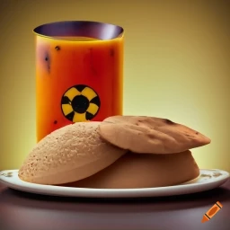

Nuclear Idly

The Volcano Vada is an explosive culinary masterpiece that pays homage to the raw power of nature...
Recipe:
- Prepare the Vada Batter:
- Wash and soak the chana dal in water for 3-4 hours.
- Drain the soaked dal and grind it into a coarse paste without adding too much water.
- In a mixing bowl, combine the ground dal, mashed potato, chopped onion, green chilies, curry leaves, ginger-garlic paste, cumin seeds, mustard seeds, asafoetida, and salt. Mix well.
- Shape and Fry the Volcano Vada:
- Heat oil in a deep frying pan over medium heat.
- Take a small portion of the vada mixture and shape it into a ball. Make an indentation in the center to resemble a crater.
- Gently slide the shaped vada into the hot oil and fry until golden brown and crispy. Remove and drain on paper towels.
- Prepare the Tamarind Lava Sauce:
- In a saucepan, combine tamarind pulp, jaggery or brown sugar, red chili powder, and salt.
- Cook over medium heat, stirring constantly, until the mixture thickens and becomes a lava-like consistency. Remove from heat and set aside.
- Assemble the Volcano Vada:
- Place the fried vada on a serving plate.
- Drizzle the tamarind lava sauce over the vada, allowing it to flow down the sides like molten lava.
- Add the Volcanic Ash:
- Sprinkle black sesame seeds over the vada to resemble volcanic ash, adding a unique texture and visual appeal.